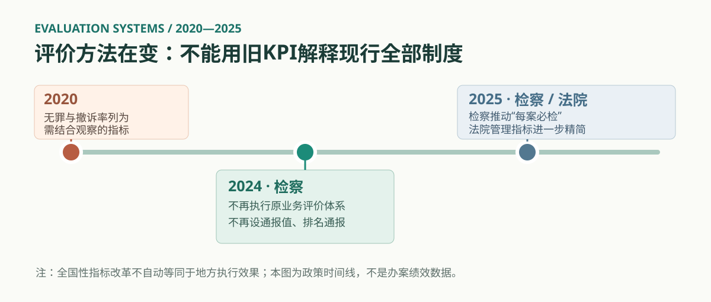

01｜问题不只是判无罪，而是如何对待纠错
刑事司法同时面临两种目标：一是依法查明事实、裁判责任；二是让大量案件得到及时、规范的处理。前者需要开放地处理证据和法律争议；后者容易转化为可统计的结案、起诉、改判、退补和无罪等数据。
这两者并非天然冲突。关键在于：当一种统计结果被赋予个人绩效含义时，工作人员是否会为了避免“负面结果”而放弃本来应当及时作出的纠正？
本案的事实支点来自最高人民法院指导性案例225号：2019年5月17日，14岁的江某某在学校厕所内遭15人围殴，持折叠刀反击造成两人重伤二级、一人轻微伤；吉首市法院于2020年7月6日认定正当防卫并宣告无罪；检方抗诉，湘西州中院于2022年11月9日准许撤回抗诉。[S1]
上述事实与媒体关于336天羁押、国家赔偿及恢复名誉的报道，是研究的事实基础；有关“绩效如何影响抗诉”的分析只能在此之上另行提出假设。
02｜公安、检察、法院、司法行政：不是一张考核表
所谓“司法体系内部考核”，至少分为机关整体工作评价、部门及个人绩效、具体案件质量评查与责任追究。它们的对象、法律依据及后果不同，不能将“出现无罪判决”直接等同于“个人年度考核扣分”。
| 机关 | 法定职能与主要质量关注 | 可能出现的指标偏差 |
|---|---|---|
| 公安机关 | 受案立案、侦查取证、强制措施、程序规范与执法责任。 | 把侦破数、移诉数等数量结果误当案件质量；忽略有利于嫌疑人的证据。 |
| 检察机关 | 批捕与起诉审查、证据把关、诉讼监督、案件质量评查。 | 单纯追求低无罪率、低撤诉率或某项“优良”数值。 |
| 人民法院 | 事实认定、法律适用、审判质量与效率、审判执行管理。 | 过度追求低改判率、低发回率或高结案率，弱化独立判断。 |
| 司法行政 | 监狱、社区矫正、法律援助等依法监管与服务。 | 单看任务完成量、管理风险数量，而忽视权利保障与长期效果。 |
| 纪检监察 | 监督、调查、审理、处分与内部质量管理。 | 将线索、立案、处分等数量指标与工作质量简单等同。 |
表中右列是需防范的管理风险，而非全国统一现行指标清单；机关层级、岗位和地方细则存在差异。公安部《公安机关执法质量考核评议规定》明确了执法质量考评、档案和追责相关规则。[S2]
公安：立案与证据质量
必须同时调查有罪和无罪、有利与不利的证据。最高法判无罪本身不能自动证明侦查违法，但应触发对关键证据收集与强制措施必要性的复盘。
检察：审查起诉与法律监督
衡量重点应包括起诉决定是否有充分证据、是否尊重正当防卫、是否及时纠正错误，不能由最终是否定罪单独决定。
法院：裁判与监督之间的界限
法院在证据不足或依法构成正当防卫时作出无罪裁判，是司法功能的正常体现；是否构成办案失误需要独立评查。
救济：赔偿不是最终一站
人身自由赔偿、精神损害抚慰、消除影响、恢复名誉、赔礼道歉的对象和履行方式不同，须分别检验。
03｜历史转折：从负面指标到案件质量评查
2020年4月，最高检推出以“案—件比”为核心的《检察机关案件质量主要评价指标》。公开说明明确提出要结合观察撤回起诉率和无罪判决率，防止部分地区为了降低无罪率而将法院拟判无罪案件撤回起诉。[S3]
同年9月《检察日报》解释检察官业绩考评时，明确将“撤回起诉率”“无罪判决率”称为负面指标；但也强调，如果法庭审理期间证据或法律规定发生变化导致撤诉或无罪，不应简单视为质量问题。[S4]

2024年10月，最高检决定取消不必要、不合理的检察业务考核，不再执行原业务评价指标体系、不再设置各类通报值、不再对各地业务数据排名通报。2025年又发布案件质量检查与评查工作规定（试行），要求建立“每案必检”等机制。[S5][S6]
法院也在调整管理指标。最高法2026年公开说明：2024年初审判质量管理指标体系出台，2024年9月从26项减至18项，2025年进一步减至16项；同时明确该体系不用于对全国法院进行直接考核排名。[S7]
04｜江某某案时间线：羁押、抗诉与恢复名誉
- 厕所内发生多人围殴与防卫反击
15人围住14岁学生江某某；折叠刀反击造成两人重伤二级、一人轻微伤。[S1]
- 江某某向公安机关投案
- 吉首市法院一审认定正当防卫、宣告无罪
判决认为江某某具有防卫意图，不法侵害正在进行，防卫没有明显超过必要限度。[S1]
- 吉首市检察院提出抗诉
最高法案例确认抗诉事实，未在该文本中列明确切抗诉日；地方检察机关当时的绩效考核动机不能由抗诉事实推定。[S1]
- 湘西州中院准许撤回抗诉
湘西州检察院在二审期间申请撤回，一审无罪结论最终得到维持。[S1]
- 国家赔偿决定明确金额及恢复名誉方式
两项赔偿共计220,192.56元，并要求在户籍住所地、学校发布相关信息、有关负责人赔礼道歉。[S8]
- 最高法发布指导性案例225号
将本案防卫意图、侵害时间、防卫限度的裁判要点用于指导类似案件。[S1]
- 检察机关在江某某户籍所在地张贴公告
11月26日新京报采访其家属确认此事。学校公告和负责人道歉等义务是否全部履行仍需核对。[S9]
注意：336天是被羁押时间，而2020年7月至2022年11月是抗诉程序持续期间，二者不能混为“持续被关两年多”。
05｜法院为什么认定正当防卫？
最高法指导性案例225号围绕三个判断点展开。第一，遭霸凌者有过“不甘示弱”的言语，不等于有斗殴故意。第二，一轮群殴暂时中止后仍遭背后掌掴，不法侵害并未结束。第三，判断“明显超过必要限度”，要考虑防卫时的具体情境、年龄、人数差距、侵害强度与反击行为，而不只是最终重伤结果。[S1]
不能只看是否持刀
工具使用不当然否定防卫意图；应结合行为人是否主动挑起事端、双方力量与现场危险判断。
不能只看伤害结果
伤情是重要因素，但必须结合不法侵害仍在进行与必要限度的完整判断。
这并不意味着任何校园冲突中的持刀伤害都属于正当防卫：本案成立的关键在于法院认定的特定事实组合。不能由单一新闻标题推广到所有案件。
06｜为什么指标可能改变行为？一个可检验的机制
如果某些部门把“无罪判决出现”直接视为起诉失败，个体就可能面临一个与实体公正并不一致的激励：承认案件不成立会带来明确的组织成本，而继续坚持原有结论的成本往往延后或分散。
一个健康的纠错机制，不应让及时承认错误比继续维护错误更昂贵。
这个解释可与古德哈特定律和委托—代理问题联系起来：容易量化的结果指标，一旦成为奖惩目标，就有可能改变被评价者的行为。需要注意，这只是组织行为的分析工具，不能代替对具体案件的证据调查。
路径 A｜考核压力导致维持起诉的假设
假设 假定无罪判决被简单记作检察官个人不利绩效，办案者就可能更倾向于撤诉、补证或抗诉。要验证本案是否如此，必须查看2020年吉首市检察院考核细则、承办检察官业绩记录以及抗诉审批意见。仅有全国性文件，无法证明该个案的实际激励路径。
路径 B｜法律认识分歧的替代解释
竞争解释 公诉方也可能真诚地持有不同的防卫意图、侵害持续性和限度判断。即便其法律判断最终未被支持，也不能仅因此推定个人不当动机。应阅读原抗诉书完整理由，再与指导性案例逐点比较。
路径 C｜程序惯性与跨层级审批
假设 侦查、批捕、起诉和抗诉前期意见一旦形成，后续改变结论的协调成本可能上升；责任链条越长，纠错越可能需要上级介入。但在没有内部材料时，本案只能被视为可调查的实例，不能判定具体机制已经发生。
对知乎文章的判断：它识别了值得研究的真实历史激励——负面考核指标；但把“存在考核压力”直接写成“本案抗诉就是为了避免扣分”，跨越了证据边界。两者之间还缺少具体组织决策材料。
07｜国家赔偿如何衡量？金钱与名誉修复的双重维度
| 项目 | 法院最终确认金额 | 证据 |
|---|---|---|
| 侵犯人身自由赔偿金 | 146,795.04 元 | 2023年10月23日湘西州中院国家赔偿决定书，经媒体披露 [S8] |
| 精神损害抚慰金 | 73,397.52 元 | |
| 合计 | 220,192.56 元 | 两项相加 |
赔偿决定还要求吉首市检察院在江某某户籍住所地及吉首市第二中学发布相关信息，为其消除影响、恢复名誉，并由有关负责人赔礼道歉。[S8] 2026年11月的报道能够支持“户籍所在地公告已张贴”，但不足以核实全部非金钱义务已履行，也没有足够证据解释迟延原因。[S9]
国家承担赔偿责任与对具体办案人员追偿、纪律处分或司法责任追究属于不同问题。是否追究个人责任，需要独立判断行为、过错和法定条件，不能从赔偿事实直接反推。
08｜国际司法体系可比什么，不能比什么？
美国的联邦和各州检察机关、英格兰及威尔士的皇家检察署、德国的法官职业评价、日本的起诉筛选制度，管理架构与统计口径并不一致。直接拿一国的“无罪率”与另一国“定罪率”比较，会忽略审前不起诉、撤诉、协商程序、审判结构及分母定义的差异。
跨法域比较更适合提出三个可操作问题：一是何种情况下允许检察官不起诉；二是法院作出无罪判决后是否有独立质量审查；三是纠正错误是否受到组织鼓励。2020年我国检察考核文件自己就注意到了“撤诉以规避无罪”的风险，这比任何简单跨国百分比更能说明指标选择的重要性。[S3]
本节为制度比较框架，尚未建立同分母的国际统计数据集，因此不作司法体系优劣排序或“应有无罪率”判断。
09｜如何设计不惩罚诚实纠错的评价机制？
| 应评价什么 | 可核查的过程证据 | 避免什么 |
|---|---|---|
| 证据完整性 | 有利与不利证据收集、补充调查、证据披露记录 | 以结论替代证据 |
| 法律适用质量 | 对正当防卫条件逐项说理、疑难案件法律意见 | 以伤害结果倒推违法 |
| 程序与羁押必要性 | 羁押审查、程序告知、律师参与、期限复核 | 将强制措施作为管理便利 |
| 及时纠错 | 主动撤回错误决定、采纳纠错意见、依法赔偿 | 把承认错误机械计为失败 |
| 救济落实 | 赔偿支付、公告、道歉、申诉办理记录 | 赔偿后非金钱救济久拖不决 |
最重要的一条制度原则是：依法作出的合理判断，即使事后被不同裁判替代，也不应自动等同于个人过错；但隐匿证据、违法羁押、明知证据不足仍强行起诉等行为，不应因为最终得到有罪判决而免于追究。
2024—2025年的制度调整提供了方向，但是否足以改变一线行为，需要观察案件评查结论、人员责任认定与实际纠错数据，而非仅看指标数量从多少项变为多少项。
10｜仍需取得哪些材料，才能完成因果判断？
- 当地2020年业绩考核细则：无罪、撤诉、抗诉结果究竟如何进入机关与个人评价？
- 完整抗诉书与审批意见：原检方对防卫成立条件的核心反驳是什么？是否存在讨论与异议记录？
- 撤回抗诉的理由：2022年撤回基于证据变化、法律认识调整，还是其他程序因素？
- 赔偿履行记录：2023年决定中的户籍地、学校公告与负责人赔礼道歉如何逐项执行？为什么公告在2026年11月发布？
- 责任评查材料：是否启动案件质量评查、纠错整改或司法责任追究？公开信息不足以确认。
没有这些材料，可以证成“历史考核机制具有潜在扭曲激励”，但还不能把某一条假设写成江某某案的已证实成因。
结语｜司法质量不能只用“判赢了多少”衡量
本案的司法意义，首先是最高法用指导性案例明确校园霸凌中的正当防卫认定；其次是两年多抗诉程序与国家赔偿提示了纠错、恢复名誉的时间成本；最后是它为研究组织指标如何影响办案行为提供了具体问题。
真正值得长期追问的不是要不要考核，而是如何让依法纠错获得正当的制度评价，而不是让工作人员面对“修正判断”时感到只能承受组织惩罚。
资料来源与证据边界
优先列出公开原始规范和最高法指导性案例；国家赔偿决定书目前依据媒体获取的裁判文本节录，恢复名誉进展依据2026年11月的家属采访。链接和结论的核对时间：2026年11月27日。
- [S1] 最高人民法院：指导性案例225号《江某某正当防卫案》2024-05-30 · 案情、三项防卫审查、2020无罪及2022撤回抗诉阅读案例原文
- [S2] 司法部：公安机关执法质量考核评议规定（公安部令第137号）2016-03-01施行 · 执法质量管理与责任记录阅读规定
- [S3] 最高检：2020年《检察机关案件质量主要评价指标》解读2020-04-26 · “案—件比”、撤诉与无罪指标组合查看解读
- [S4] 检察日报：检察官业绩考评体系的公开解释2020-09-26 · 对负面指标的解释与例外情形查看报道
- [S5] 最高检：案件质量评查要坚持高质效导向2024-10-28 · “一取消三不再”的制度变化查看改革说明
- [S6] 最高检：人民检察院案件质量检查与评查工作规定（试行）2025-03 · “每案必检”机制查看规定新闻
- [S7] 最高法：推进政绩考核改革纪实2026-06 · 审判管理指标的历次调整和适用边界查看官方说明
- [S8] 澎湃新闻／解放日报：湘西州中院2023年国家赔偿决定书披露2023-11 · 赔偿构成、恢复名誉及责任追究争议；属于裁判文书的媒体转引查看报道
- [S9] 新京报：检察院公告为少年恢复名誉2026-11-26 · 家属采访与2026-11-20公告的报道查看采访